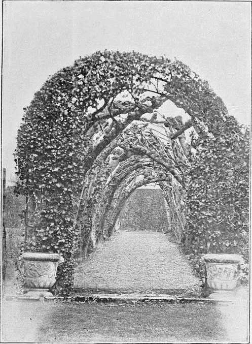
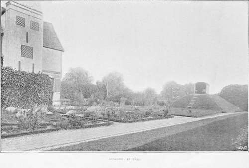

Elizabethan Flower Garden. Part 3
Description
This section is from the book "A History Of Gardening In England", by Alicia Amherst. Also available from Amazon: A History Of Gardening In England.
Elizabethan Flower Garden. Part 3
Many of the walks and alleys were " shadowed over with vaulting or arch-hearbes." † Bacon thus explains the object of making "these pleached alleys," or "covert" walks. "But because the alley will be long, and in the great heat of the year or day you ought not to buy the shade in the garden by going in the sun through the greene (you ought) to plant a covert alley upon carpenter's work, about twelve foot in height by which you may go in shade into the garden." The " thick-pleached alley," in which Antonio saw Don Pedro and Claudio walking, in Much Ado About Nothing, was one of this sort. The word "pleach," or "plash," or "impleach," is from the French " plesser," from " plexum," to plait, infold, or interweave. It is used by-Shakespeare, not only for cut and intwined trees, as in this case, but also for braided hair, " their hair with twisted metal amorously impleach'd," in A Lover's Complaint, and for arms enfolded, "with pleacht armes, bendinge down," in Anthony and Cleopatra.
* Thomas Hill, Gardener's Labyrinth. † Ibid.
The plants used to form these shady walks were willows, limes, wych-elms, hornbeam, cornel, privet or whitethorn, also "the great maple or sycamore tree cherished in our land only in orchards, or elsewhere, for shade and walks." . . . " It is altogether planted for shady walks, and hath no other use with us that I know." * The alley remaining at Hampton Court is of wych-elm. At Theobalds these trees were chiefly used in those alleys where " one might walk twoe myle in the walkes before he came to their ends." At Drayton, in Northamptonshire, there are two fine specimens of pleached alleys, and the gnarled stems of the wych-elms forming them, bear testimony to their age. The covert walks were sometimes made with a trellis of wood-work, planted with creepers, as we have seen in earlier times, " made like galleries," " covered with ye vine spreading all over, or some other trees which more pleased them."†.
Mounts still formed an important accessory to the garden. Bacon, who, it must be remembered, was " speaking of those (gardens) which are indeed princelike," describes the mount. "I wish," he says, "in the middle, a fair mount, with three ascents, and alleys enough for four to walk abreast; which I would have to be perfect circles, without any bulwarks or embossements : and the whole mount to be 30 feet high, surmounted by a fine banquetting-house with some chimneys neatly cast." Such banqueting-houses were often made merely for some special occasion, and decorated with ivy and evergreens, to give them the appearance of permanency. This was an age that delighted in pageants, and what more fitting background for their display than the beautiful gardens that this same love of display was creating and developing, When any pageant or " revells" took place, additions were made to the arbours or banqueting-houses in the garden, to accommodate the guests. In June, 1554, " certaine banqueting-houses of Bowes (= boughs) and other devices of pleasure,were to be made at Oatlands, and Sir Thomas Cawarden, as "Master of the Tents and Toyles," received a royal command to superintend their erection as he had " good experience heretofore in lyk things.*" * The following extracts show some of his past experiences, both what he had to do, and the cost of carrying it out.† "4th year of Edward VI.— Banketing-houses 2, the one in Hyede Parke conteynenge in length 57 feet and in bredth 21 feet of assize with a halpace staier (step for dais) conteining the bredth the one way 60 foote and the other way 30 foote and over the same a type or turret garnished. One other house in Marybone Parke conteyninge in length 40 foote the same adjoined framed, made and wrought of tymber, brick, and lyme, with their raunges and other necessary utensyles therto insident, and to the like accustomed, And 6 standinges whereof were in either of the said parkes, 3 all of tymber garnished with boughes and flowers every (one) of them conteynenge in length 10 foote and in bredth 8 foote * * * Employed on the above works for 22 days, at all hours a space to eat and drynke excepted." Carpenters and bricklayers 1d. the hour, labourers 1/2d. the hour—plasterers 11d. a day, painters 7d. and 6d. a day. " Charges for cutting boughs in the wood at Hyde Park for trimming the banquetting-house, gathering rushes, flags, and ivy." . . . "Taylors for sewing the roof, etc. : basket makers working upon windows.—Total cost, £169 . 7 . 8".
* Parkinson, Paradisus. "†" Hill, Gardener"s Labyrinth.
PLEACHED ALLEY AT DRAYTON.
In Stow's Annals another of these banqueting-houses is described. It was made in 1581, at Whitehall, " for certaine Ambassadors out of France." It was round, being 332 feet in circumference, and was built on the S.W. of the palace near the river. Over the canvas roof, painted like clouds, "this house was wrought most cunningly with ivy and holly, with pendants made of wicker rods garnished with bay, rue, and all manner of strange flowers garnished with spangles of gold . . . beautiful with teasons (= festoons) made of ivy and holy, with all manner of strange fruits, as pomegranates, oranges, pompions, cucumbers, grapes, with such like spangled with gold, and most richly hanged".
* MSS. belonging to M. More Molyneux. Loseley, Surrey. † Ibid.
Of course, such banqueting-houses were only made on State occasions, and could only be afforded by the wealthy. The mount in an ordinary garden was surmounted by an arbour of the plainest description. It may have been a great convenience as a point from which a good view could be secured, especially in a garden not sufficiently grand or large to have a raised terrace ; but in these more modest gardens, unless planted with flowering plants and creepers, a mount cannot have been a beautiful object. There is such a mount still to be seen at Boscobel. Nothing could be plainer than this; and it is probably a good sample of the mounts I am speaking of, although it cannot be so early as Elizabethan times. It was most likely made when the house was built, about 1620, and it was in its present state when Charles II. hid in the oak-tree hard by. The battle of Worcester was fought on Wednesday, September 3rd, 1651. The Saturday following, Charles spent in hiding in the " Royal Oak," at Boscobel, and the next day, " His Majesty, finding himself now in a hopefull security, spent some part of this Lord's-day in a pretty arbor in Boscobel garden, which grew upon a mount, and wherein there was a stone table and seats about it. In this place he pass'd away some time in reading, and commended the place for its retiredness." *
Continue to: